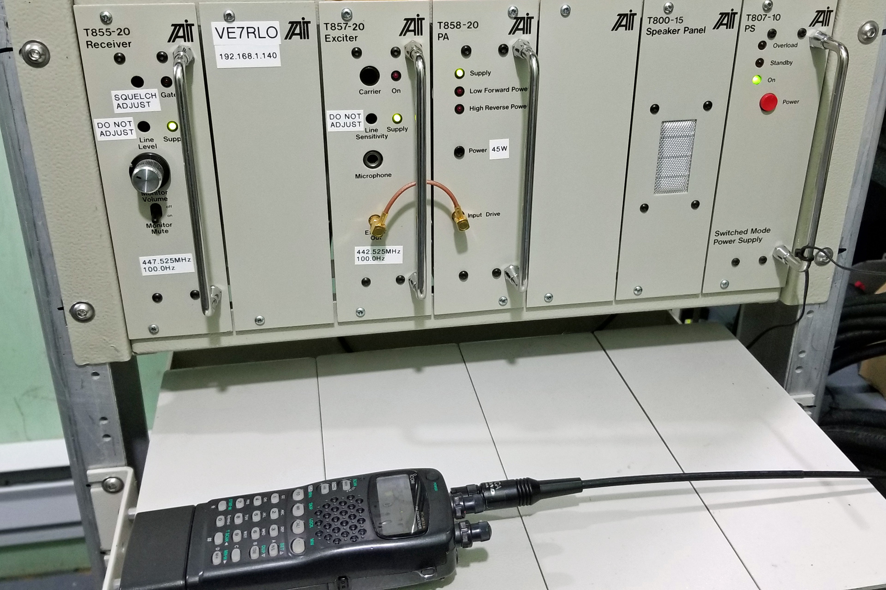
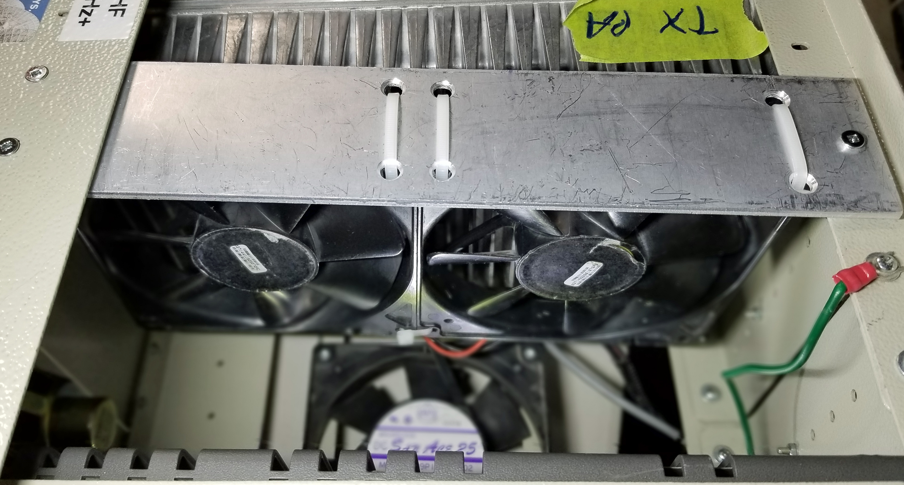
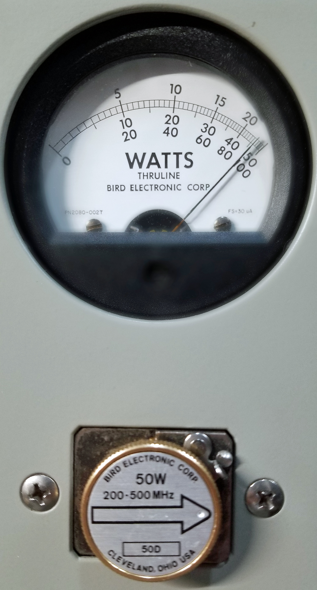
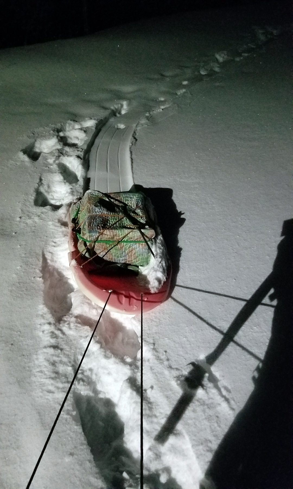
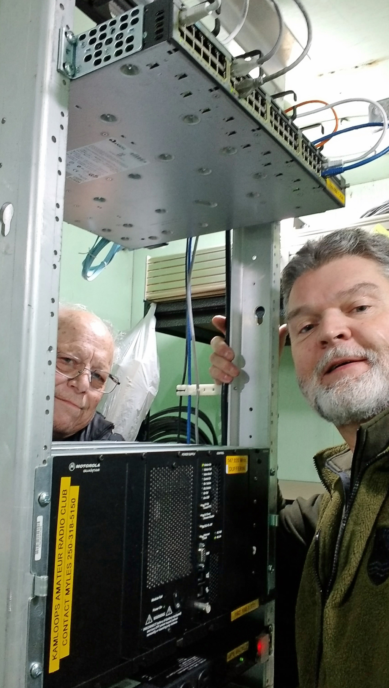

VE7RLO UHF repeater back on the air!
Back to StoriesStory 685
Sun, 2022-02-06 13:40 — VE7FSR


After unexpectedly going silent a week ago, the VE7RLO UHF (442.525+ PL 100) repeater is back in action.
Myles, VE7FSR and Doug, VA7GPX made a number of trips up and down Mt.
Dufferin to bring down, and take back up the repeater, both times in the dark.
One the first trip up one evening, Myles discovered that the fuse had blown on the repeater power supply, and not having brought any tools with him (other than a tiny pocket tool which was all but useless) it meant another trip up to take the repeater out of the rack and bring it down for testing.



After some head scratching and bench testing the best hypothesis was that the stock power amplifier (PA) fan was not running when there was an Allstar connection (such as during the Rainbow Country Net, which is when it died a week ago) which probably led to the PA overheating and blowing the fuse.
A new bracket was fabricated and couple of fans were added that operate all the time, cooling the PA and power supply.
After two days of bench testing showed everything was working fine, and no overheating problems were evident, it was time to take the repeater back up the hill.
Last Friday evening Myles and Doug took the repeater back up to the top, which led to some interesting questions from curious and confused night time dog walkers!
Thanks Doug for your assistance and company on this project!